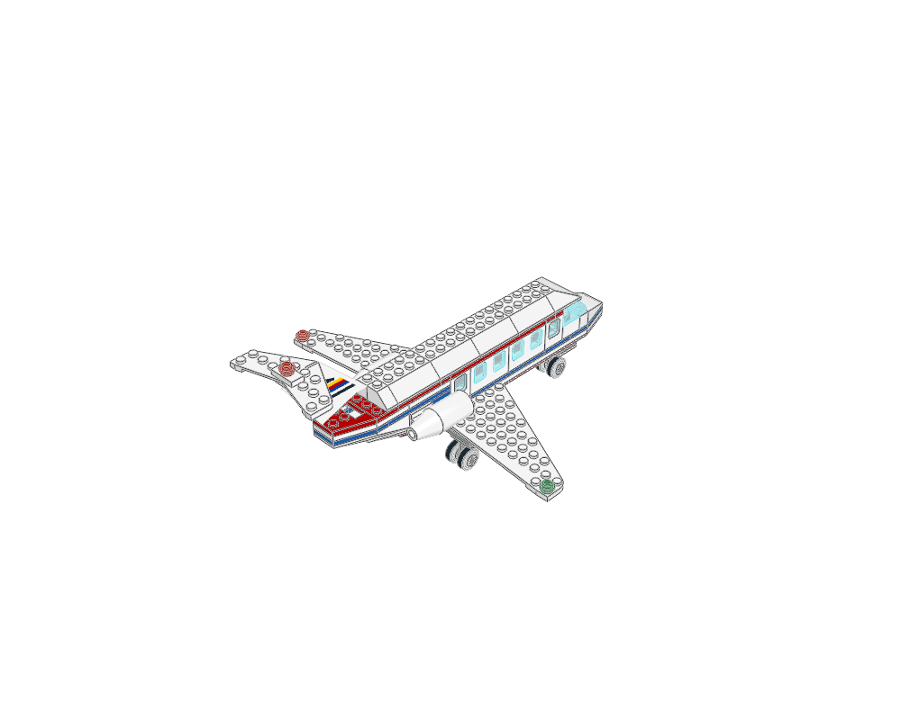
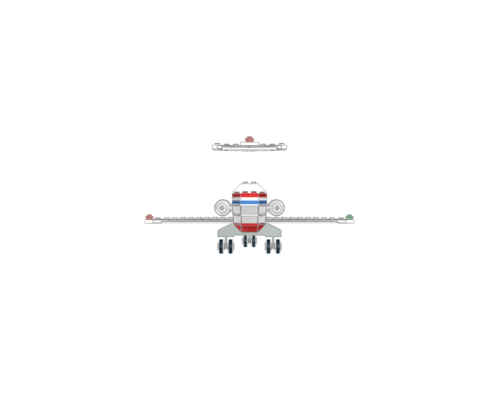
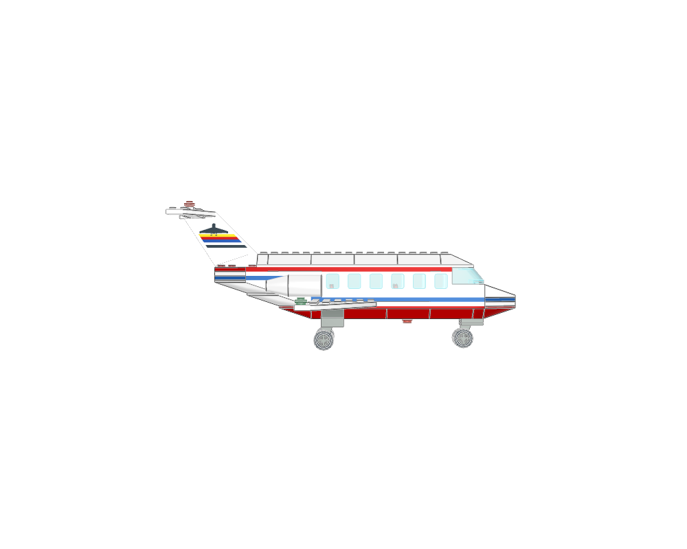
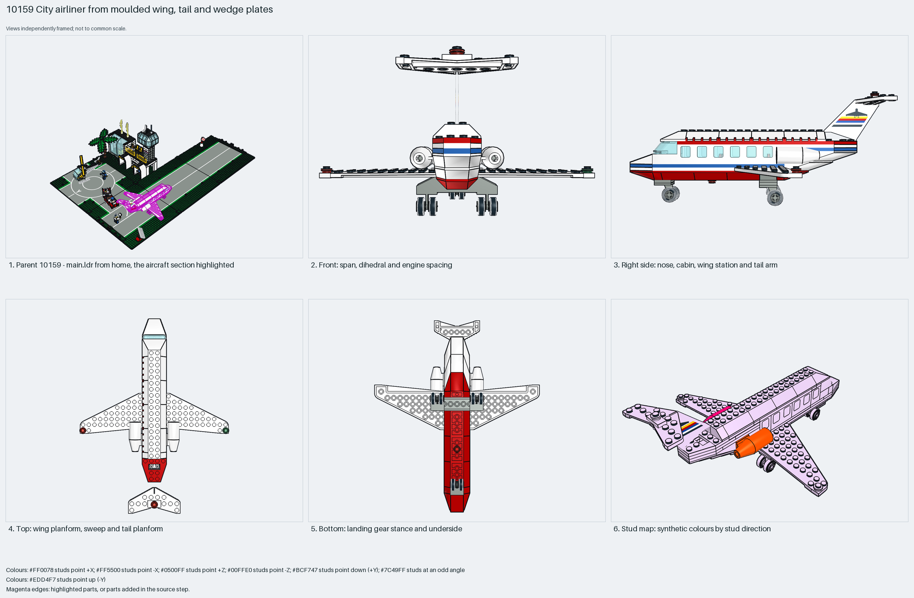

The classic City airliner in one studs-up section: a 4-wide brick fuselage with window bricks under an openable double-slope roof, moulded 7×12 wing plates, a T-tail with the printed 4867 tailplane on a brick fin, two 4868a/4869 engine pods on the rear fuselage sides, a wedge-plate nose with a 2437 windscreen, and wheel-plate landing gear. Measured: span 25 studs, length 29, height 14, 121 parts, no Technic.
construction
121 parts in 1 step. Fuselage: 4-wide brick rows with 4862/4863 window bricks and the 4857 double-slope roof on 4625 hinge tiles; nose: 4854–4861 wedge plates and slopes with a 2437 windscreen; wings: 3585/3586 7×12 wing plates; tail: a brick fin carrying the 4867px3 printed tailplane; engines: two 4868a shells with 4869 cones either side of the rear fuselage; gear: 4870 wheel plates with 4624 rims, a nose pair and two mains.
interfaces
117 studs up; only the two engine pods face sideways. Modules meet on plain studs: the wing plates slide under the fuselage plates, the tailplane sits on the fin, the roof hinges on the cabin walls.
parent context
`10159 - main.ldr` places it at (690, 0, 380) with the identity matrix on the apron beside the terminal; the nose points +Z. The same design appears in 6392 (1985), whose copy keeps five plate overlaps.
reuse notes
Use it for the proportions of a small City airliner: span about equal to length, rear engines, T-tail, a 4-wide cabin with one window per two studs. Inspiration only: the embedded printed tailplane lacks a part classification; use the library 4867 pattern part when rebuilding.

home

front

righttopbottom

mosaic
Sections to study separately
Use manual prepare on a selected source section to create its build pages.